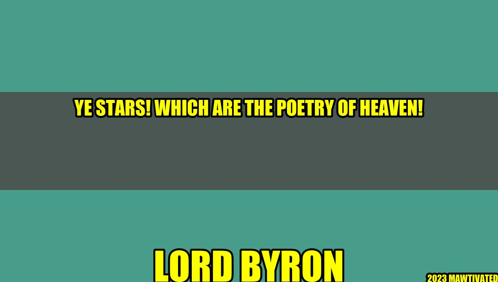

The Enchantment of Stars: Inspirations from Lord Byron

"Man, being reasonable, must get drunk; the best of life is but intoxication."
Nothing but stars filled up the night sky when Lord Byron uttered these words, which became one of his famous quotes. It was during a luxurious yacht-party in 1821, on the coasts of Italy, where the romantic poet felt the most vivid manifestation of nature's beauty.
The more we look up and reach out to touch these sparkling dots in the sky, the more we are reminded of the infinite possibilities and mysteries of the universe. From time immemorial, stars have been fascinating every human mind and cultures across the globe.
I remember my uncle, who was an amateur astronomer, used to take me stargazing on crisp nights. He would point out certain constellations and tell me their stories, such as Orion and the Seven Sisters, as if they were characters with their own adventures and conflicts.
Why are Stars enduringly fascinating?
They represent eternal life and immortality in many religious beliefs.
They have inspired countless works of art throughout history, from cave paintings to Van Gogh's "Starry Night".
They have aided navigation and helped shape human history, for example, the Polynesians who used the stars to navigate vast distances without modern instruments.
They have encouraged scientific curiosity, exploration and discoveries, such as discovering new planets and galaxies beyond our solar system.
"Ye stars! which are the poetry of heaven!"
Indeed, it is impossible to escape the charm of stars' mesmerizing twinkle, especially in the dark countryside, where light pollution is minimal. It evokes a sense of simplicity and wonder, a reminder that we are just a tiny part of a grander universe.
How can we appreciate stars more?
Get away from city lights to rural areas or national parks for better stargazing.
Use binoculars or a telescope to enhance your vision.
Join local astronomy clubs or attend planetarium shows to learn more about stars.
Download astronomy apps or software to identify constellations and stars.
The magic of stars in three points:
Their ethereal beauty awakens our imagination and curiosity.
Their endurance across cultures and history shows our innate connection with the cosmos.
Their importance in science and spirituality encourages us to explore and contemplate the vastness and mystery of the universe.
Curated by Team Akash.Mittal.Blog
Share on Twitter Share on LinkedIn